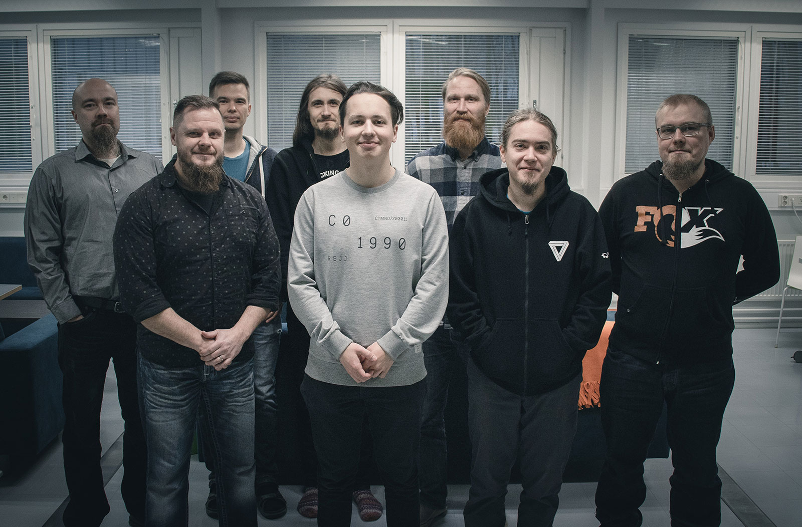

Our team has a long experience in developing cyber security sensor technology for a national early warning system protecting the critical infrastructure in Finland. At the inception of SensorFleet in 2018, we set out to re-imagine cyber security monitoring.
SensorFleet is an open sensor platform that can host detection-, protection- and scanning tools - that we call Instruments - from 3rd parties, whether commercial, open source or inhouse developed. Solution reduces complexity in managing cyber security capabilities and readily available deployment platform increases response times for emerging threats.

Vesihiisi project develops an open and scalable platform, SensorFleet, for network level cyber security monitoring. Platform enables emergence of an open ecosystem for development and distribution of cyber security monitoring capabilities. SensorFleet prototype will be further developed to production level maturity in this project.